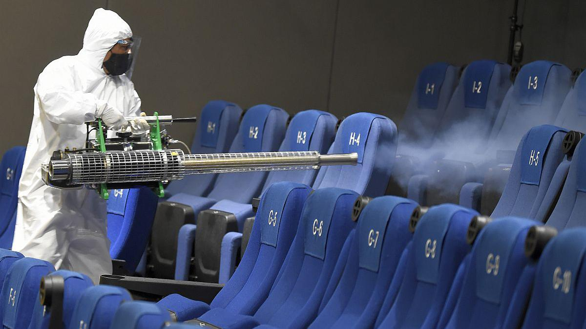

Medidas de Seguridad y Bioseguridad
Medidas de Seguridad
Pasos a seguir para ingresar a la sala
- Antes de ingresar se medira la temperatura a los clientes y se le desinfectara.
- Debe de usar doble mascarilla en las áreas comunes, baños, pasillos y salas.
- Debes de mantener la distancia. Se pide respetar la ubicación de las butacas.
Pasos a seguir para la salida de la sala
- La salida al terminar la función será de manera ordenada siguiendo las indicaciones del personal.
- Sigue en todo momento las indicaciones del personal.
- Evitar correr o saltar por las rutas de salida de la sala del cine
Medidas de Bioseguridad
La desinfección y limpieza de los servicios higiénicos sera cada 30 minutos, de una manera constante dejando limpios las puertas, inodoros, lavatorios y mostradores.
En las demás áreas del cine se desinfectaran las manijas, barandas, puertas, mostradores, sillas, mesas y quiosco de ventas de entradas.
Todas las butacas que hallan sido ocupadas serán desinfectadas al termino de cada función.
